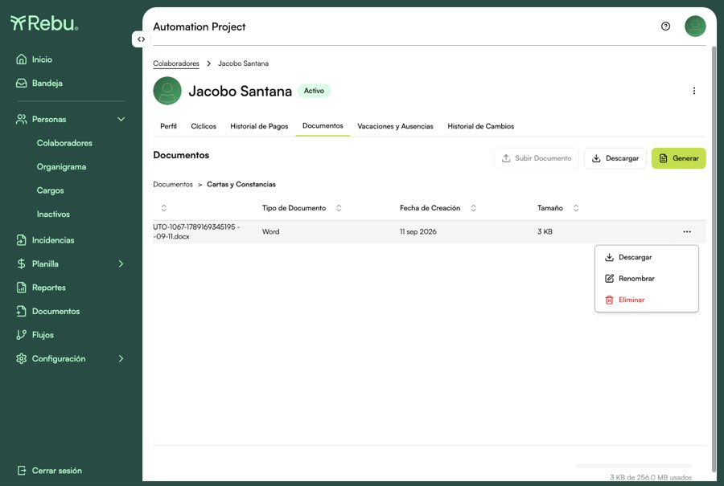
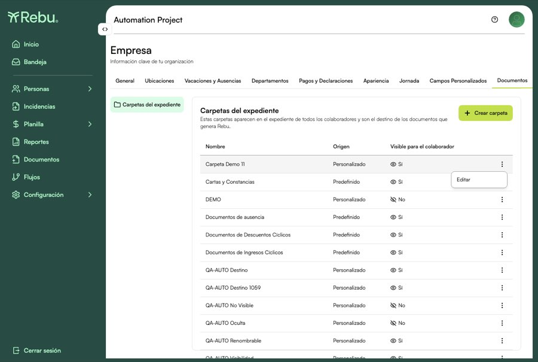

Reporte de Automatización E2E
Release v16.7.0
📅 11 sep 2026
·
🌿 test/5853-qauto-1063-carpeta-destino
·
🌐 UAT
·
🔗 app-rebu-portal-03-uat.azurewebsites.net
40
Tests en UAT (11 escenarios con spec propio · QAUTO-1066 se verifica corriendo la suite de v16.6.0)
~3.5 m
Duración (en dos lotes)
Épica REBU-5853 — Carpetas del expediente.
Este reporte cubre el
lado configuración y plantillas : las 7 HU de
REBU-6067
(5860, 5861, 5867, 5868, 5869, 5885, 5971). Las otras 7 HU de la épica —expediente, generación y
alimentación automática— las cubre
REBU-6066
y
no están en este reporte .
Fuera de alcance por decisión:
QAUTO-1064
(la absorción de carpetas ad hoc homónimas de
REBU-5987 ):
en UAT co.2 no existe ninguna carpeta ad hoc y el botón que las creaba se retiró.
Quedan además
3 exploratorios manuales — nombres y unicidad, ciclo de vida de una carpeta
destino, y auditoría, esta última hoy
inverificable : no hay ruta de audit log accesible en el portal.
🤖 Automatizados 40
📋 Manuales 0
Caso Descripción Status TC-DOC-212con la visibilidad encendida, la carpeta está en los dos lados PASS TC-DOC-213al apagar la visibilidad, el colaborador deja de verla PASS TC-DOC-214apagada para el colaborador, el máster la sigue administrando PASS TC-DOC-215volver a encenderla la devuelve intacta PASS
Caso Descripción Status TC-DOC-216el listado de plantillas nombra la carpeta destino configurada PASS TC-DOC-217renombrarla actualiza el listado sin cambiar el vínculo PASS TC-DOC-218el expediente refleja el nombre nuevo sobre la misma carpeta PASS TC-DOC-259una carpeta predefinida no se puede renombrar PASS
Caso Descripción Status TC-DOC-219el generado aterriza en la carpeta destino de su plantilla PASS TC-DOC-220se le puede cambiar la carpeta destino a la plantilla PASS TC-DOC-221el siguiente documento generado va a la carpeta nueva PASS TC-DOC-222el documento ya entregado no se movió PASS
Caso Descripción Status TC-DOC-223con el interruptor apagado, la plantilla no se le ofrece PASS TC-DOC-224encenderlo se la ofrece en vivo, sin volver a iniciar sesión PASS TC-DOC-225apagarlo se la retira, también en vivo PASS TC-DOC-226con el interruptor apagado el servidor rechaza la generación PASS
Caso Descripción Status TC-DOC-227la plantilla se le ofrece pese a apuntar a una carpeta que no ve PASS TC-DOC-228el documento existe y está en la carpeta oculta PASS TC-DOC-229el colaborador no ve el documento que su plantilla produce PASS
Caso Descripción Status TC-DOC-230cada fila muestra la carpeta y el interruptor con los que se guardó PASS TC-DOC-231el nombre de la carpeta se resuelve contra el catálogo, no se copia PASS TC-DOC-232listado y detalle cuentan lo mismo de cada plantilla PASS
Caso Descripción Status TC-DOC-233las cuatro carpetas predefinidas existen, una por systemSource PASS TC-DOC-234ninguna plantilla del tenant quedó sin carpeta destino PASS TC-DOC-235cada plantilla apunta a una carpeta que existe, y el nombre coincide PASS TC-DOC-236a una plantilla migrada se le puede cambiar la carpeta destino PASS
Caso Descripción Status TC-DOC-255las cuatro predefinidas nacen visibles para el colaborador PASS TC-DOC-256toda carpeta activa aparece en el expediente de cada colaborador PASS TC-DOC-257una carpeta no visible no llega al expediente, pero el máster la ve PASS TC-DOC-258el selector de Carpeta destino ofrece exactamente el catálogo activo PASS
Caso Descripción Status TC-DOC-240el Máster puede renombrar, eliminar y descargar PASS
Documentado en QAUTO-1067 · caso TC-DOC-240 · E2E-REG-065 Historia REBU-5885 Evidencia
01 — Menú del Máster: Descargar, Renombrar y Eliminar

Subir Documento aparece deshabilitado incluso para él.
Status PASS
TC-DOC-241el rol Ver y Editar sólo puede descargar PASS
Documentado en QAUTO-1067 · caso TC-DOC-241 · E2E-REG-065 Historia REBU-5885 Evidencia
01 — Menú del rol Ver y Editar: sólo Descargar
Mismo documento, mismo menú, otro rol.
Status PASS
TC-DOC-242el colaborador dueño del expediente sólo puede descargar PASS
Documentado en QAUTO-1067 · caso TC-DOC-242 · E2E-REG-065 Historia REBU-5885 Evidencia
01 — Menú del colaborador dueño: sólo Descargar
Desde Mi Perfil, con su menú lateral reducido.
Status PASS
TC-DOC-243dentro de una carpeta predefinida nadie sube documentos PASS
Documentado en QAUTO-1067 · caso TC-DOC-243 · E2E-REG-065 Historia REBU-5885 Evidencia
01 — Subir Documento deshabilitado dentro de la carpeta predefinida
El BE además responde 403 al intentarlo por API.
Status PASS
Caso Descripción Status TC-DOC-244una carpeta predefinida sólo ofrece Descargar PASS
Documentado en QAUTO-1068 · caso TC-DOC-244 · E2E-REG-066 Historia REBU-5885 Evidencia
01 — Menú de una carpeta predefinida: sólo Descargar
Ni Renombrar ni Eliminar, para ningún rol.
Status PASS
TC-DOC-245una carpeta personalizada tampoco se gestiona desde ahí PASS
Documentado en QAUTO-1068 · caso TC-DOC-245 · E2E-REG-066 Historia REBU-5885 Evidencia
01 — Menú de una carpeta personalizada: sólo Descargar
El AC1 no distingue entre predefinidas y personalizadas.
Status PASS
TC-DOC-246ni el expediente ni Configuración ofrecen eliminarla PASS
Documentado en QAUTO-1068 · caso TC-DOC-246 · E2E-REG-066 Historia REBU-5885 Evidencia
01 — Kebab en Configuración → Empresa → Documentos: sólo Editar

No hay Eliminar por ningún camino de la UI.
Status PASS
Caso Descripción Status TC-DOC-247sin carpeta abierta, el documento queda fuera de las carpetas PASS TC-DOC-248dentro de una carpeta personalizada, queda en esa carpeta PASS TC-DOC-249dentro de una predefinida, el servidor la rechaza PASS
Sin casos manuales ejecutados en este release. Los 3 exploratorios de la épica están descritos en REBU-6067 y todavía no se ejecutaron.
Rebu Automation Suite · Generado el 11 sep 2026 · Rama test/5853-qauto-1063-carpeta-destino · Entorno UAT